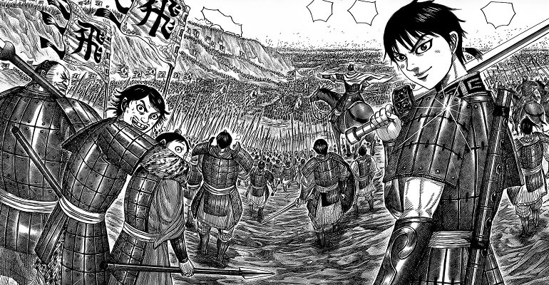
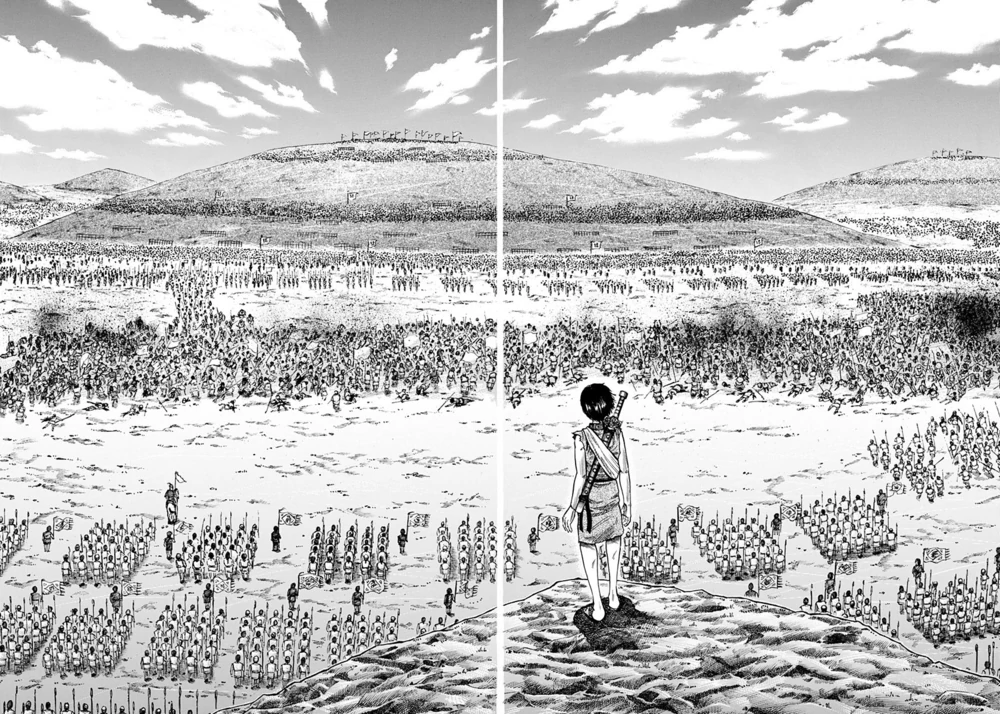
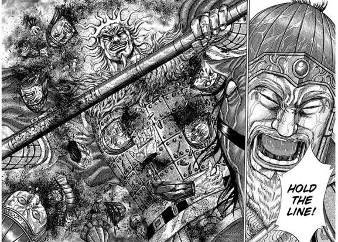
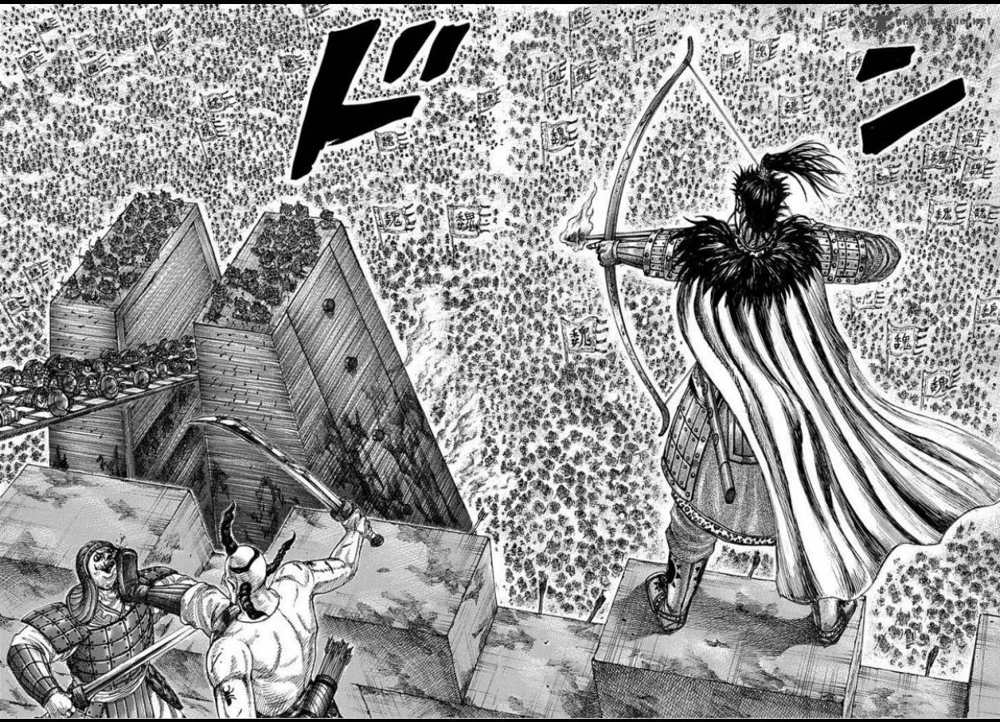
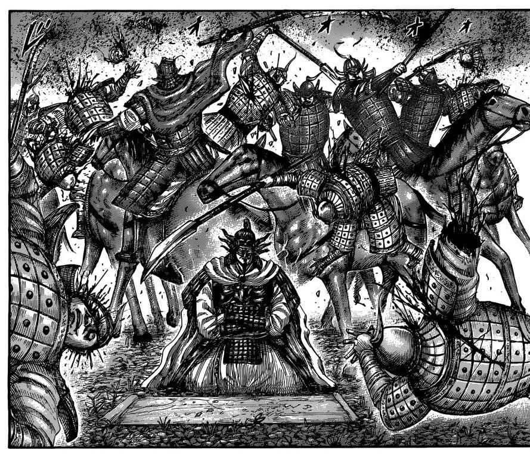
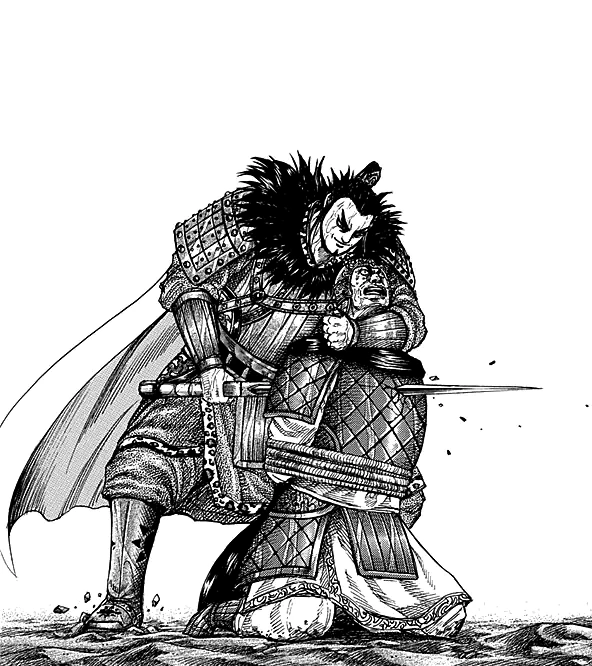
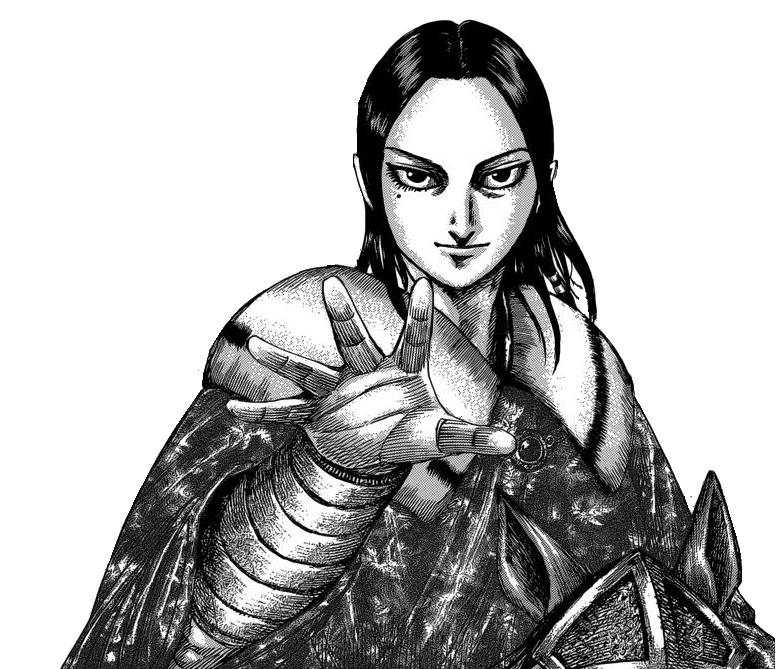

Kingdom is a japanese graphic novel, or what cultured people call manga. Kingdom's
story basically revolves around a period in ancient chinese history called warring states period. where people
have nothing better to do other than wage war.

TOP 3 FAVORITE ARCS

Keiyou Campaign arc was the first war for the unit's OG members an it's amazing to see
how far
every on of theme have gone. and it's also the first appearance of duke hyou so thats a plus for sure.

Sanyou Campaign Arc is another great one. in it we see the first appearance of loads
of awesome characters most notably and for me the star was great heavens general of zhao Renpa.

lastly but certainly not least is Coalition Arc. this one by far for me and most
kingdom enjoyers the masterpiece of the manga.
TOP 3 FAVORITE CHARACTERS

OUSEN

KANKI

MOUTEN
The whole idea of unifying China involves butchering an enemy state's people through overwhelming military
power
until they no longer have the strength to fight back. Then, you just swoop in and claim everything they own for
yourself: The land, The people, the resources, all of it. It's the slaughter and pillaging on a whole new scale.
And the only ones who will be happy for the peace this brings...Are the people of Qin.